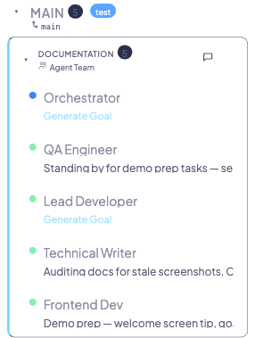
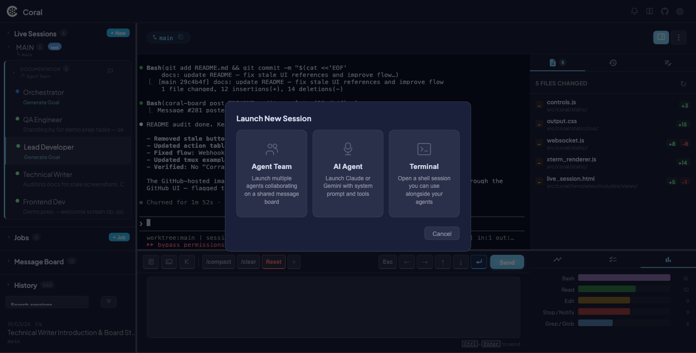
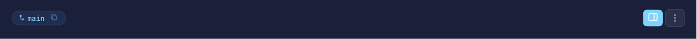
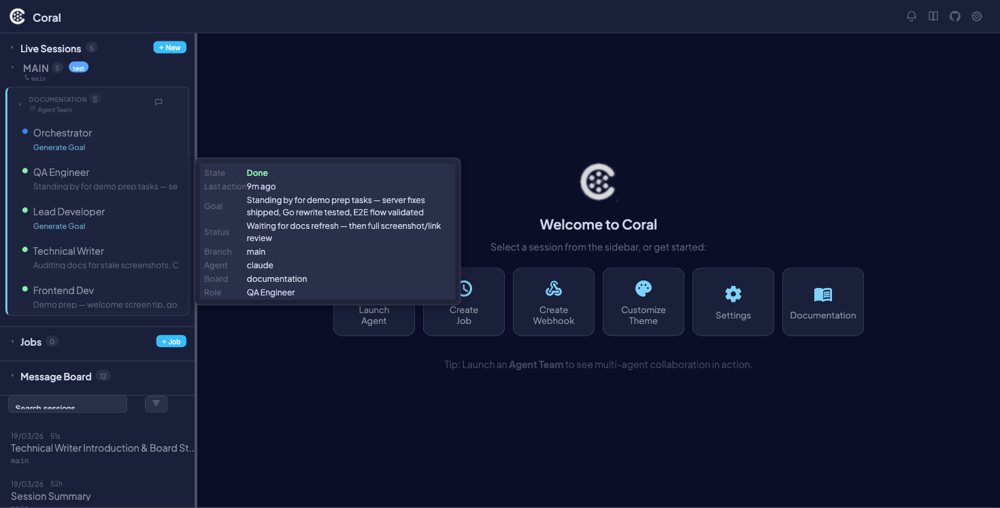

Multi-Agent Orchestration
Multi-Agent Orchestration is Coral's core capability: run multiple AI coding agents in parallel, each in its own git worktree, managed via tmux, and monitored through a single dashboard.
Every agent runs in a dedicated tmux session named {agent_type}-{uuid}. Output is piped to a log file via tmux pipe-pane, and the dashboard discovers agents by parsing tmux session names. You can launch up to MAX_AGENTS=5 agents through the CLI launcher, or add more at any time through the dashboard.
Both Claude and Gemini agents are supported, and you can run them side by side.

Why multi-agent?
| Benefit | How Coral delivers it |
|---|---|
| Parallel development throughput | Each agent works in an isolated git worktree, so changes never conflict during development |
| Task specialization | Assign different tasks to different agents — one on backend, another on frontend |
| Mixed agent types | Run Claude and Gemini side by side to leverage each model's strengths |
| Centralized monitoring | One browser tab shows every agent's terminal, activity, tasks, and notes |
| Reduced context-switching | Status dots and NEEDS INPUT badges tell you at a glance which agents need attention |
Getting started
Step 1: Set up git worktrees
Create worktrees so each agent has its own isolated checkout:
# From your main repo
git worktree add ../worktree_2 main
git worktree add ../worktree_3 main
Each worktree is a full working copy on the same branch (or different branches). Agents can make changes independently without stepping on each other.
Step 2: Launch via CLI
# Launch Claude agents for all worktrees in a directory
launch-coral /path/to/parent-dir
# Launch Gemini agents instead
launch-coral /path/to/parent-dir gemini
What happens behind the scenes:
- Iterates subdirectories up to
MAX_AGENTS=5 - Generates a UUID for each agent session
- Creates a tmux session named
{agent_type}-{uuid} - Sets up
pipe-panelogging to/tmp/{agent_type}_coral_{folder}.log - Launches the agent with
--session-idand injectsPROTOCOL.md - Opens a native terminal window per agent
- Starts the web server on port
8420
Step 3: Launch via dashboard
Click the + New button in the sidebar header, or use the API directly:
curl -X POST http://localhost:8420/api/sessions/launch \
-H "Content-Type: application/json" \
-d '{"working_dir": "/path/to/worktree", "agent_type": "claude", "display_name": "Auth Feature"}'

!!! tip
Dashboard-launched sessions are not limited by MAX_AGENTS — you can add as many as your machine can handle.
Step 4: Monitor agents
The dashboard keeps you connected to every agent in real time:
- WebSocket
/ws/coral— Polls the full session list every 3 seconds - WebSocket
/ws/terminal/{name}— Streams terminal content for the selected session - Status dots — Green (active), yellow (stale), amber (waiting for input)
- PULSE protocol — Agents emit structured
||PULSE:STATUS||and||PULSE:SUMMARY||markers that the dashboard parses into readable status and goal fields

Step 5: Interact with agents
Once agents are running, you can control them from the dashboard:
- Send commands via the input bar at the bottom of the session view
- Quick-action buttons for common operations (Plan Mode, Accept Edits, Bash Mode, macros)
- Restart or Kill agents from the session header
- Rename agents by right-clicking in the sidebar
!!! info Your input text is preserved per-session — switch between sessions without losing what you were typing.
Supported agent types
Claude
| Property | Detail |
|---|---|
| Launch command | claude --session-id {uuid} |
| Resume support | Yes — restart with --resume to continue a previous session |
| History location | ~/.claude/projects/**/*.jsonl |
| Tool event tracking | Rich activity timeline (Read, Write, Edit, Bash, Grep, Glob, Web, Subagents) |
Gemini
| Property | Detail |
|---|---|
| Launch command | Uses GEMINI_SYSTEM_MD env var for protocol injection |
| Resume support | No |
| History location | ~/.gemini/tmp/*/chats/session-*.json |
| Tool event tracking | Basic (parsed from terminal output) |
Custom agents
You can add support for other agent types by subclassing BaseAgent and calling register_agent():
from coral.agents.base import BaseAgent, register_agent
class MyAgent(BaseAgent):
agent_type = "myagent"
# Override launch, build_command, parse_history, etc.
register_agent(MyAgent)
!!! warning Custom agents must follow the PULSE protocol to get status and goal updates in the dashboard. See Protocol for the full spec.
Git worktree integration
Why worktrees?
Git worktrees give each agent a fully isolated working directory:
- Isolated changes — Each agent edits files without affecting other agents
- Different branches — Agents can work on separate feature branches simultaneously
- Safe merging — Changes stay isolated until explicitly merged
Git polling
Coral polls git state every 120 seconds for each session, collecting:
- Current branch name
- Latest commit hash and message
- Remote URL
Git state in the dashboard
- Branch tag in the sidebar next to each session name
- Commit history available via the API
- Session-linked commits tie git activity back to the agent that made them
Worktree commands reference
# Create a worktree on a new branch
git worktree add ../feature-auth -b feature/auth
# List all worktrees
git worktree list
# Remove a worktree
git worktree remove ../feature-auth
# Clean up stale worktree references
git worktree prune
Dashboard UI guide
Sidebar
Each session in the sidebar shows:
| Element | Description |
|---|---|
| Status dot | Color-coded activity indicator (green, yellow, amber, gray) |
| Display name | Custom name or worktree folder name |
| Agent type badge | CLAUDE or GEMINI with distinct styling |
| Branch tag | Current git branch |
| NEEDS INPUT badge | Appears when the agent is waiting for a response |
| Tooltip | Hover for full session details |

Session switching
Click any session in the sidebar to switch to it. When switching:
- Input text you were typing is preserved per-session
- The terminal view loads the selected agent's output
- Tasks, notes, and activity timeline update to the selected session
- Event history loads from the database
Related pages
- Live Sessions — Full guide to the session view, terminal, command pane, and side panel
- Scheduled Jobs — Automate agent launches on a schedule